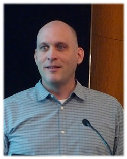

Developer recruitment and outreach
He took a minute to talk about the widespread hostility toward cleanup patches. The best way to avoid getting such patches, he suggested, was for maintainers to just clean up the code themselves; it shouldn't take that much time for them to do. Failing that, maintainers should point contributors who want to do cleanup patches toward the staging tree. Christoph Hellwig complained that a lot of time has been wasted on "horrible" white-space patches, but Greg responded that getting started in kernel development is hard. We should be nice to developers and let them start with an easy patch. Christoph protested that encouraging developers to do the "wrong thing" was not actually nice, but others disagreed. A quick straw poll of the room verified that a number of maintainers have seen developers who start with cleanup patches move on to more substantive work.
The real recruitment problem, Greg said, has to do with finding
intermediate-level tasks for developers. When the kernel got started, the
holes in functionality were big, there was lots of stuff to work on, and
just about anybody could find a useful task to do. Now the holes are small

Greg also suggested participating in programs like Outreachy and the Google Summer of Code (GSoC). We all should be looking to replace ourselves, he said. There is a particular need for more Outreachy mentors. Outreachy, he said, has brought in people with good skills, a number of whom are now doing Linux development work at companies. Keith Packard said that the X.org community has worked with both Outreachy and GSoC. The amount of work required to mentor Outreachy interns was too much, Keith said, but GSoC has been great. There was general agreement among those who have done this work that GSoC is an easier place for mentors to start. Ben Herrenschmidt said that a lot of developers are doing this sort of work within their companies.
Linus said that the request for intermediate tasks was ironic, given what he has seen in the community. He is not against white-space patches, though he is not excited by them either. But he gets annoyed when developers accept the white-space patches, then argue against patches that are real improvements. He mentioned one first-time patch posting from a developer who was trying to improve the code that resulted in a frightening email thread. We need to be nicer to developers who are sending real code improvements, he said, and encourage developers doing white-space work to look at the code instead. Ben noted that this was a classic example of the bikeshed problem: there is no shortage of people who will comment on simple patches.
Christoph said that he prefers to see self-driven people coming into our community. They need to have enthusiasm or they won't stick with it. Dan Williams said that we, as a community, are good at killing enthusiasm, be it by not responding to patches or arguing over little details. We should remember, he said, that maintainership is a service role and act accordingly.
The session wound down with a final suggestion that writing tests might be
a good task for beginning kernel developers.
| Index entries for this article | |
|---|---|
| Kernel | Development model/Community |
| Conference | Kernel Summit/2015 |
Posted Nov 9, 2015 0:38 UTC (Mon)
by charris (guest, #13263)
[Link]
I cannot speak for the kernel, but in the project I work on (NumPy), I find writing good tests harder and more time consuming than writing the code to be tested.
Developer recruitment and outreach